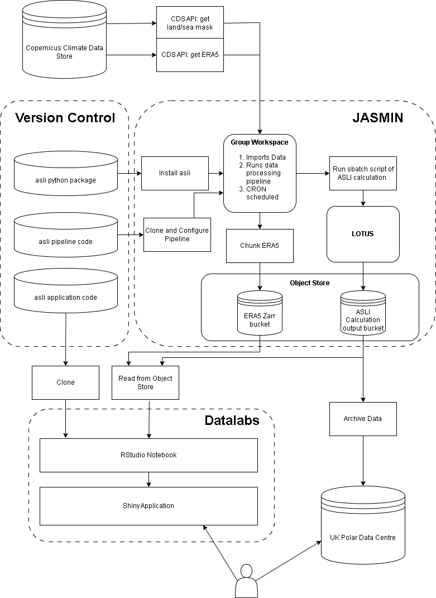

What is the Amundsen Sea Low Index (ASLI)?
The Amundsen Seas Low (ASL) is a highly dynamic and mobile climatological low pressure system located in the Pacific sector of the Southern Ocean. In this sector, variability in sea-level pressure is greater than anywhere in the Southern Hemisphere, making it challenging to isolate local fluctuations in the ASL from larger-scale shifts in atmospheric pressure. The position and strength of the ASL are crucial for understanding regional change over West Antarctica.
More information can be found on Scott Hosking’s website.

Python Package
This application uses a python package (asli) which implements the ASL calculation methods described in Hosking et al. (2016).
This package was developed by David Wilby at the British Antarctic Survey. You can find more about this package in this Github repository.
Demonstrating NERC EDS services
The aim of this application is to demonstrate the usage of different services provided by the NERC Environmental Data Service (NERC EDS).
We are using a JASMIN group workspace (GWS) to run a data processing pipeline. Using the Copernicus Climate Data Store API, ERA5 data is read in. Calculations are then performed on LOTUS using asli functions.Output data is stored on JASMIN Object Storage. This data is read in and displayed by this application. This application in turn is hosted on Datalabs.
This means compute, data storage and application hosting are all separated. Each component could also be deployed on different infrastructure, for example BAS HPCs or commercial cloud providers.
Reproducible Pipeline
The data processing pipeline is WIP documented on Github, and can be deployed on other platforms.
Technical Overview

Citations
Hosking, J. S., A. Orr, T. J. Bracegirdle, and J. Turner (2016), Future circulation changes off West Antarctica: Sensitivity of the Amundsen Sea Low to projected anthropogenic forcing, Geophys. Res. Lett., 43, 367–376, doi:10.1002/2015GL067143.
Hosking, J. S., & Wilby, D. asli [Computer software]. https://github.com/scotthosking/amundsen-sea-low-index